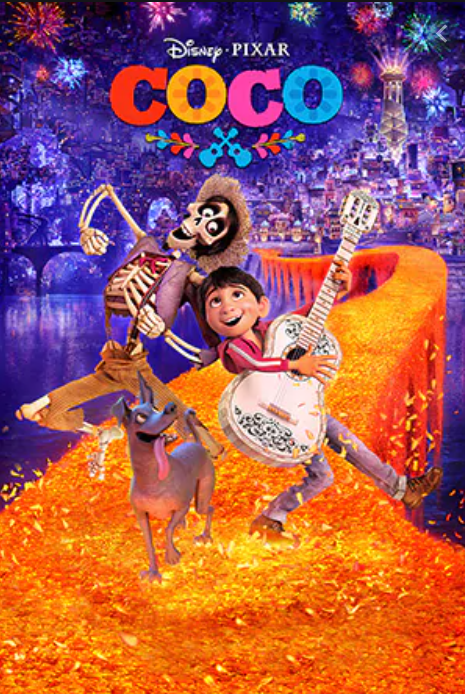
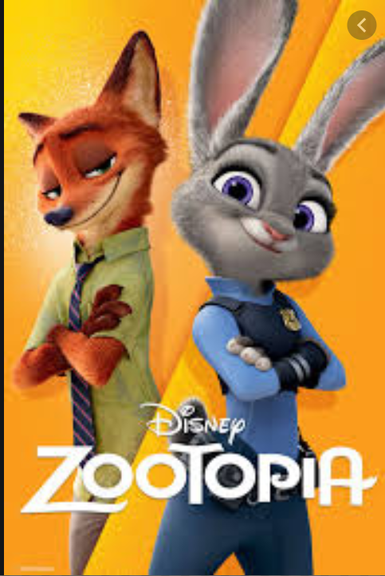

COCO

Miguel dreams of becoming a musician, but his great-great-grandpa left his wife and daughter for music.
So, music is thought to be a curse in their family.
Once he discovered that Ernesto a passed-famous-musician was his great-great-grandpa.
But it was his mistake.
After going to the land of dead, Miguel discovered that Ernesto was a cheater and murdered hector who was his great-great grandpa.
And Earnesto snatched all the songs that hector had written for his daughter Coco.
After going to the real world he informed it everyone and proved that music is not a curse actually.
So, music is thought to be a curse in their family.
Once he discovered that Ernesto a passed-famous-musician was his great-great-grandpa.
But it was his mistake.
After going to the land of dead, Miguel discovered that Ernesto was a cheater and murdered hector who was his great-great grandpa.
And Earnesto snatched all the songs that hector had written for his daughter Coco.
After going to the real world he informed it everyone and proved that music is not a curse actually.
BOSS BABY

Sometimes siblings think them competitor.
But they also miss them from their core of heart.
Templeton also couldn’t sustain the activities of his child-brother.
His child brother informed him that it had come to world in a mission.
After that he would return to heaven.
When child-brother returned to heaven, Templeton was missing him a lot and wanted his brother again.
But they also miss them from their core of heart.
Templeton also couldn’t sustain the activities of his child-brother.
His child brother informed him that it had come to world in a mission.
After that he would return to heaven.
When child-brother returned to heaven, Templeton was missing him a lot and wanted his brother again.
ZOOTOPIA
In Zootopia police force, a little bunny joined as a young officer.
She wanted to prove that anyone can do anything.
She was investigating a case of 12 missing animals and found those animals in a jail.
Those animals became very ferocious.
As the reason of their ferociousness, she claimed that predators are genetically furious.
For her statement, her beloved fox friend got disheartened.
And then she revealed that actually not only predators, all the animals can be furious because of eating the Night-Howler Flower. .
She wanted to prove that anyone can do anything.
She was investigating a case of 12 missing animals and found those animals in a jail.
Those animals became very ferocious.
As the reason of their ferociousness, she claimed that predators are genetically furious.
For her statement, her beloved fox friend got disheartened.
And then she revealed that actually not only predators, all the animals can be furious because of eating the Night-Howler Flower. .